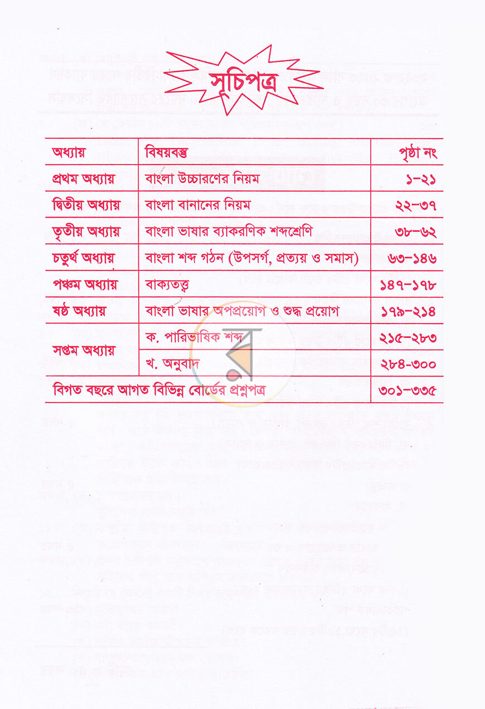
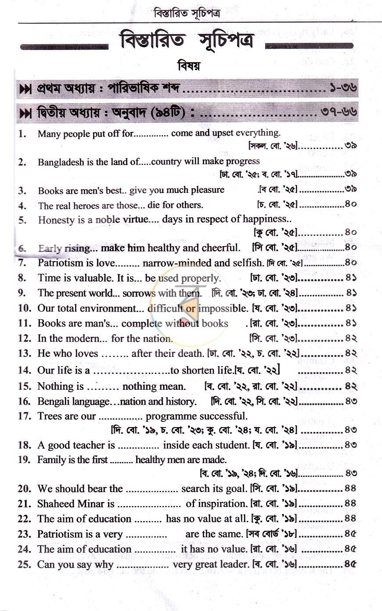
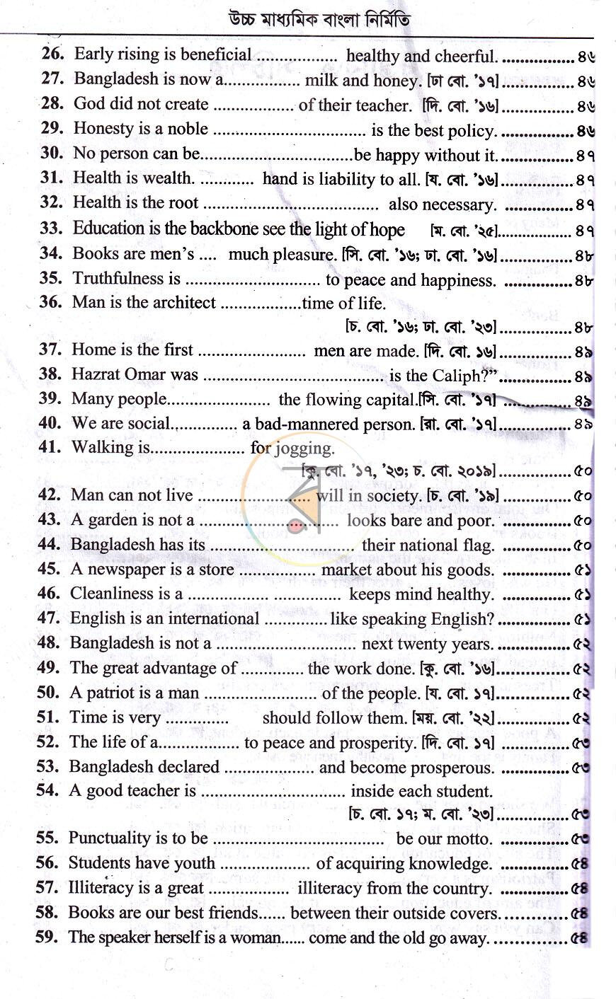
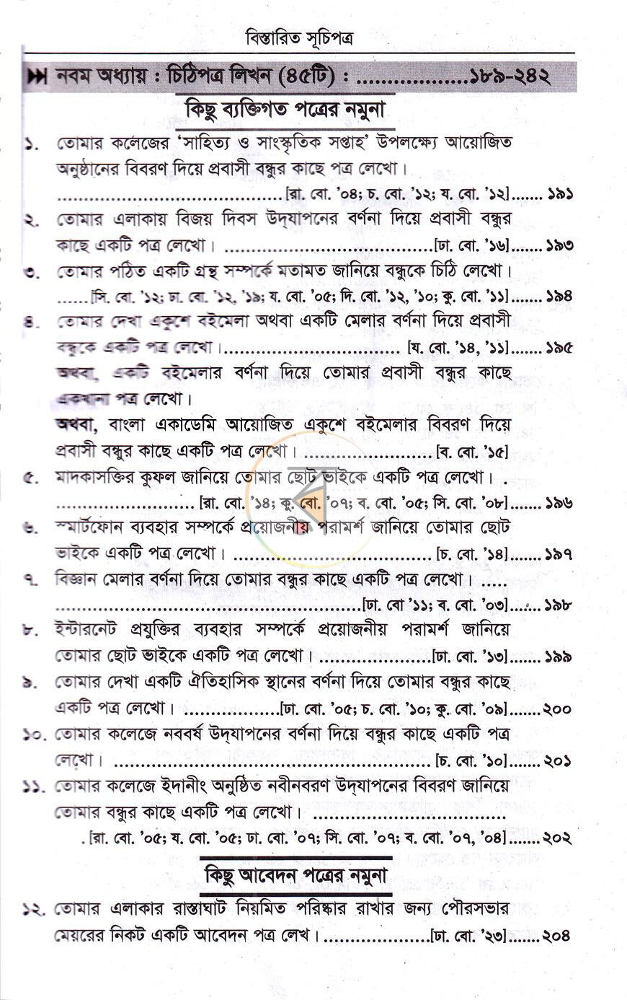
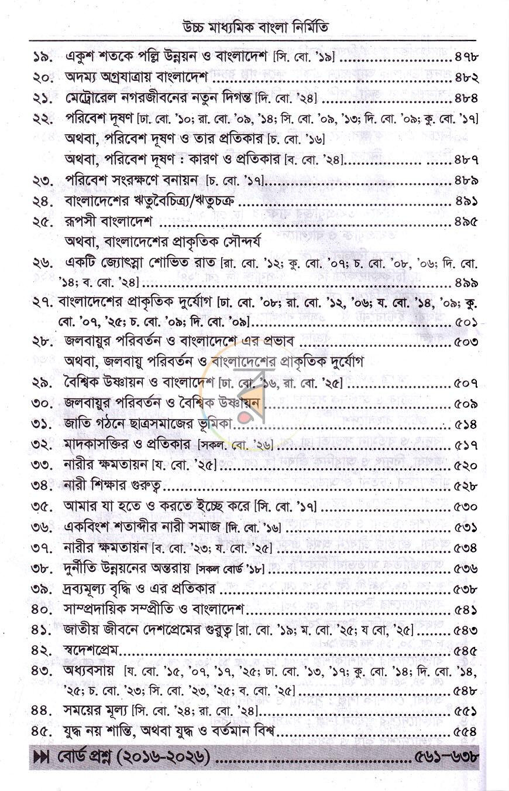

ছবিতে থাকা প্রস্তুতির বিষয়
প্রথম ছবির সাতটি অধ্যায়ে সপ্তম অধ্যায়ের দুই অংশ আলাদা করে রাখা হয়েছে। নির্মিতির অন্য ছবিতে চিঠিপত্র লিখনও আছে। টিক দিলে অগ্রগতি শুধু এই নয়টি নির্বাচিত প্রস্তুতির আইটেমের; পুরো সিলেবাসের শতাংশ নয়।
বাংলা ২য় পত্র: ছবিভিত্তিক প্রস্তুতি
০/০
১ম অধ্যায়: বাংলা উচ্চারণের নিয়ম
২য় অধ্যায়: বাংলা বানানের নিয়ম
৩য় অধ্যায়: বাংলা ভাষার ব্যাকরণিক শব্দশ্রেণি
৪র্থ অধ্যায়: বাংলা শব্দ গঠন (উপসর্গ, প্রত্যয় ও সমাস)
৫ম অধ্যায়: বাক্যতত্ত্ব
৬ষ্ঠ অধ্যায়: বাংলা ভাষার অপপ্রয়োগ ও শুদ্ধ প্রয়োগ
৭ম অধ্যায় (ক): পারিভাষিক শব্দ
৭ম অধ্যায় (খ): অনুবাদ
নির্মিতির সূচি: চিঠিপত্র লিখন
দেওয়া নির্মিতির সূচিতে পারিভাষিক শব্দকে ১ম এবং অনুবাদকে ২য় অধ্যায় বলা হয়েছে; এগুলো প্রথম ছবির সপ্তম অধ্যায়ের বিষয়ের সঙ্গে মিলে গেলেও দুই ছবির অধ্যায় নম্বর এক করা হয়নি। অনুবাদের তালিকায় ৯৪টি লেখা থাকলেও ছবিতে ১–৫৯ নম্বরের অংশ দেখা যায়; বাকিগুলো যোগ করা হয়নি।
চিঠিপত্রের ছবিতে থাকা উদাহরণ (১–১২)
নির্মিতির সূচিতে চিঠিপত্র লিখনের সংখ্যা ৪৫টি বলা আছে; ছবিতে কেবল নিচের অংশ দেখা যায়। ১–১১ ব্যক্তিগত পত্র, ১২ নম্বর আবেদনপত্রের উদাহরণ।
- কলেজের সাহিত্য ও সাংস্কৃতিক সপ্তাহের অনুষ্ঠানের বিবরণ দিয়ে প্রবাসী বন্ধুকে পত্র।
- এলাকার বিজয় দিবস উদ্যাপনের বর্ণনা দিয়ে প্রবাসী বন্ধুকে পত্র।
- পঠিত একটি গ্রন্থ সম্পর্কে মতামত জানিয়ে বন্ধুকে চিঠি।
- একুশে বইমেলা বা মেলার বর্ণনা দিয়ে প্রবাসী বন্ধুকে পত্র।
- মাদকাসক্তির কুফল জানিয়ে ছোট ভাইকে পত্র।
- স্মার্টফোন ব্যবহারের প্রয়োজনীয় পরামর্শ জানিয়ে ছোট ভাইকে পত্র।
- বিজ্ঞান মেলার বর্ণনা দিয়ে বন্ধুকে পত্র।
- ইন্টারনেট প্রযুক্তির ব্যবহার সম্পর্কে প্রয়োজনীয় পরামর্শ জানিয়ে ছোট ভাইকে পত্র।
- দেখা একটি ঐতিহাসিক স্থানের বর্ণনা দিয়ে বন্ধুকে পত্র।
- কলেজে নববর্ষ উদ্যাপনের বর্ণনা দিয়ে বন্ধুকে পত্র।
- কলেজে নবীনবরণ অনুষ্ঠানের বিবরণ জানিয়ে বন্ধুকে পত্র।
১২. আবেদনপত্র: এলাকার রাস্তাঘাট নিয়মিত পরিষ্কার রাখার জন্য পৌরসভার মেয়রের কাছে আবেদন।
অন্য ছবিতে থাকা বিষয়ের নাম (১৯–৪৫)
এই ছবিতে তালিকার শুরুর অংশ ও অধ্যায়ের শিরোনাম দেখা যায় না। তাই নম্বরগুলো শুধু ছবির তালিকার নম্বর, সরকারি অধ্যায় নম্বর নয়। একই বিষয় একাধিকবার থাকলে ছবির মতোই রাখা হয়েছে।
- একুশ শতকে পল্লি উন্নয়ন ও বাংলাদেশ
- অদম্য অগ্রযাত্রায় বাংলাদেশ
- মেট্রোরেল নগরজীবনের নতুন দিগন্ত
- পরিবেশ দূষণ; পরিবেশ দূষণ ও তার প্রতিকার; পরিবেশ দূষণ: কারণ ও প্রতিকার
- পরিবেশ সংরক্ষণে বনায়ন
- বাংলাদেশের ঋতুবৈচিত্র্য/ঋতুচক্র
- রূপসী বাংলাদেশ বা বাংলাদেশের প্রাকৃতিক সৌন্দর্য
- একটি জ্যোৎস্না শোভিত রাত
- বাংলাদেশের প্রাকৃতিক দুর্যোগ
- জলবায়ুর পরিবর্তন ও বাংলাদেশে এর প্রভাব; জলবায়ুর পরিবর্তন ও বাংলাদেশের প্রাকৃতিক দুর্যোগ
- বৈশ্বিক উষ্ণায়ন ও বাংলাদেশ
- জলবায়ুর পরিবর্তন ও বৈশ্বিক উষ্ণায়ন
- জাতি গঠনে ছাত্রসমাজের ভূমিকা
- মাদকাসক্তি ও প্রতিকার
- নারীর ক্ষমতায়ন
- নারী শিক্ষার গুরুত্ব
- আমার যা হতে ও করতে ইচ্ছে করে
- একবিংশ শতাব্দীর নারী সমাজ
- নারীর ক্ষমতায়ন
- দুর্নীতি উন্নয়নের অন্তরায়
- দ্রব্যমূল্য বৃদ্ধি ও এর প্রতিকার
- সাম্প্রদায়িক সম্প্রীতি ও বাংলাদেশ
- জাতীয় জীবনে দেশপ্রেমের গুরুত্ব
- স্বদেশপ্রেম
- অধ্যবসায়
- সময়ের মূল্য
- যুদ্ধ নয় শান্তি, অথবা যুদ্ধ ও বর্তমান বিশ্ব
ছবির শেষে ২০১৬–২০২৬ সালের বোর্ড প্রশ্নের উল্লেখ আছে; এটি বইয়ের সূচির উল্লেখ, ২০২৭ পরীক্ষার নির্দেশনা নয়।
দেওয়া সূচির ছবি
ছবিগুলোতে অনুবাদের বাক্যগুলো সংক্ষিপ্ত অংশ হিসেবে দেখানো হয়েছে; ছবিতে না থাকা প্রশ্ন বা শিরোনাম অনুমান করে যোগ করা হয়নি। বিস্তারিত বড় করে দেখতে ছবিতে চাপ দাও।
১. ব্যাকরণের সূচি: সাত অধ্যায়

২. নির্মিতির সূচি: পারিভাষিক শব্দ ও অনুবাদ ১–২৫

৩. নির্মিতির সূচি: অনুবাদ ২৬–৫৯

৪. চিঠিপত্র লিখন: দৃশ্যমান অংশ

৫. বিষয়ের তালিকা ১৯–৪৫ ও বোর্ড প্রশ্ন
